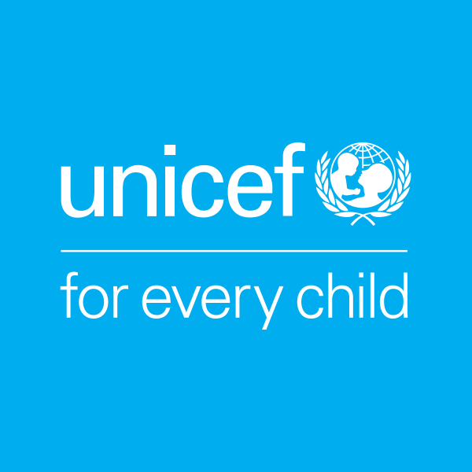
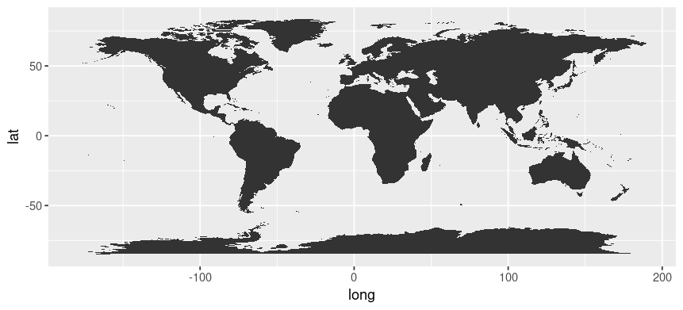
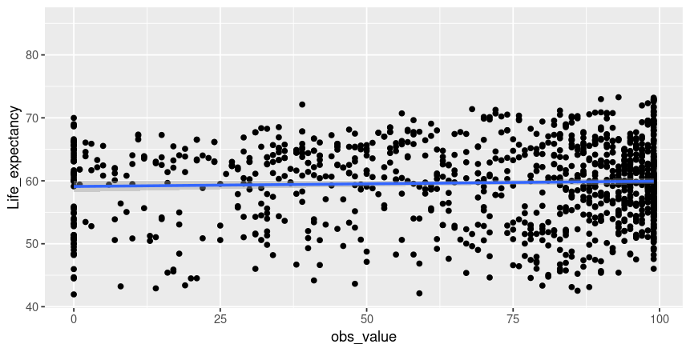
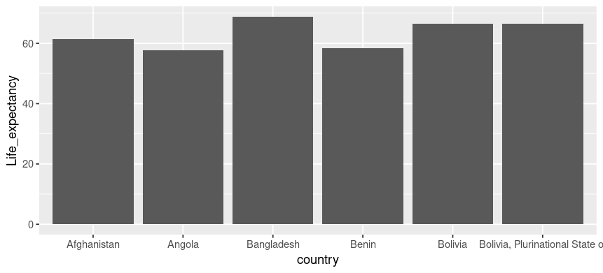
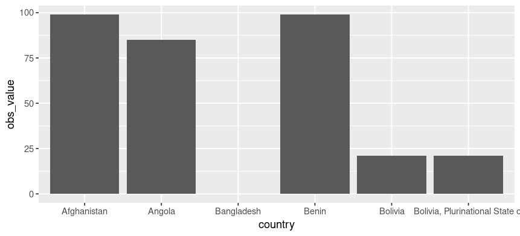
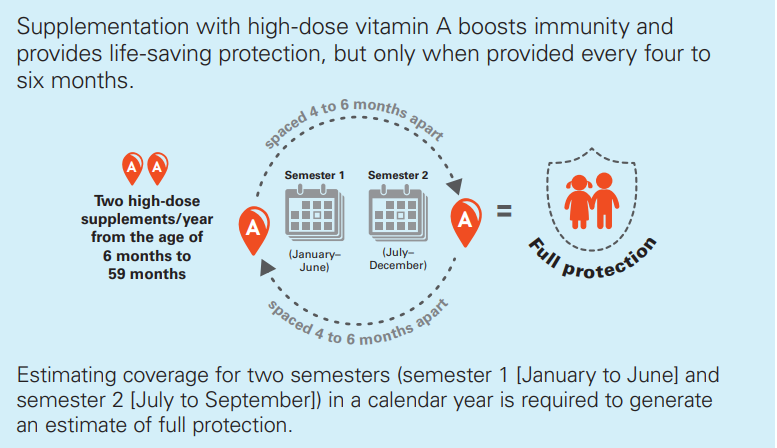

MT5000 Assignment 2
Unicef An Increase in VAS Summplements means an Increase in Life Expectancy?
UNICEF

Key Facts
- Only 64 per cent of children in need are receiving the life-saving benefits of vitamin A supplementation. And more than 140 million children are being left behind.
- The coverage of VAS programmes dropped by more than half in countries with the highest under-five mortality rates in 2016 – the same countries where VAS is needed the most.
- The number of children left unprotected in high-mortality countries more than tripled between 2015 and 2016, jumping from 19 million to 62 million.
- The global community can change the course of VAS programmes and save lives by improving integration with other programs to reach every last child, strengthening monitoring to identify the unreached, and building knowledge on the most effective platforms to reach all children 6-59 months.
- For children living in countries where under-five mortality is high and vitamin A deficiency is a public health problem, vitamin A supplementation (VAS) provides vital protection from blindness and decreases their risk of dying from preventable causes such as measles and diarrhoea. During much of early childhood – from 6 months to 5 years of age – two high-dose supplements of vitamin A per year, spaced four to six months apart, can strengthen the immune systems and improve chances of survival
- Like all forms of malnutrition, vitamin A deficiency is a marker of inequality. In countries where diets are lacking in vitamin A and infections and deaths are common, supplementation programmes give vulnerable children a better chance to survive, develop and thrive.
Global coverage of vitamin A supplementation has dropped to a shocking six-year low, leaving more than one third of children unprotected from the devastating effects of vitamin A deficiency – and stark inequities remain in reaching the children most in need. As VAS delivery shifts and countries lose platforms that they have relied on to successfully deliver vitamin A in the past, the need to chart new directions for the future of VAS programmes has never been more urgent.
Countries
Unicef deal with the most poorest of countries. They are : - Burundi - Somalia - Mozambique - Madagascar - Sierra Leone - Afghanistan - Central African Republic - Liberia
They can be seen below on Map.

Correlation
Its time to investigate if the countries receiving the doses, end up having a longer life expectancy.

We can see with the regression line, how there isn’t a definitive correction, as most of the data is spread around, however, we know from looking at our bar charts that there go hand in hand.
Comparison


For this study i used the top 6 countries out of my sample.
We can see the major similarities between the shape of both these graphs.
#Conclusion From the report, although there isn’t a defined correlation between proportion of the population dosed and an increase in life expectancy, we can see from the side by side bar charts how they follow a pattern. This is important for UNICEF and government to observe as the more VAS being distributed, the more lives it is saving.
